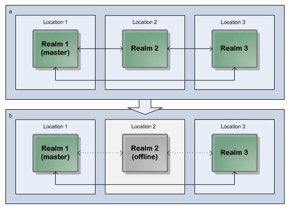

Quorum
Quorum is the term used to describe the state of a fully formed cluster with an elected master. In order to achieve quorum, certain conditions need to be met. Most importantly, 51% or more of the cluster nodes must be online and intercommunicating in order for quorum to be achieved.
There is an exception to the 51% rule if you use Clusters with Sites. This allows quorum to be achieved in certain circumstances with just 50% of the cluster nodes online and intercommunicating. See the section
About Active/Active Clustering with Sites for details.
Example: Quorum in a Three-Realm Cluster
In this example, we examine a three-realm cluster, distributed across three physical locations (such as a primary location and two disaster recovery locations). The 51% quorum requirement means there must always be a minimum of two realms active for the cluster to be online and operational:
Three-realm cluster over three locations: a 67% quorum is maintained if one location/realm fails.
Note: Dotted lines represent interrupted communication owing to server or network outages.
Split-Brain Prevention
Quorum, in conjunction with our deployment guidelines, prevents split brain (the existence of multiple masters) scenarios from occurring. By requiring at least 51% of realms to be online and intercommunicating before an election of a new master realm can take place, it is impossible for two sets of online but not intercommunicating realms to both elect a new master.
To simplify the reliable achievement of quorum, we recommend a cluster be created with an
odd number of member realms, preferably in at least three separate locations. In the above three-realm/three-location example, should any one location become unavailable, sufficient realms remain available to achieve quorum and, if necessary, elect a new master (see
Election of a new Master).